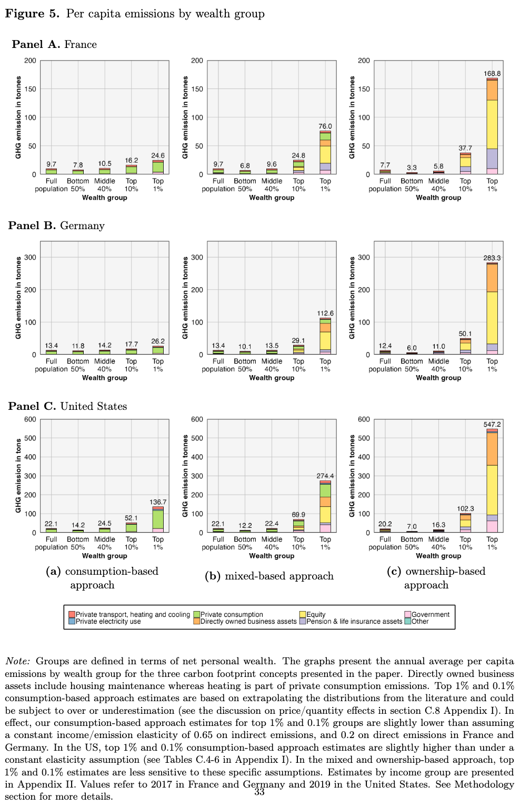
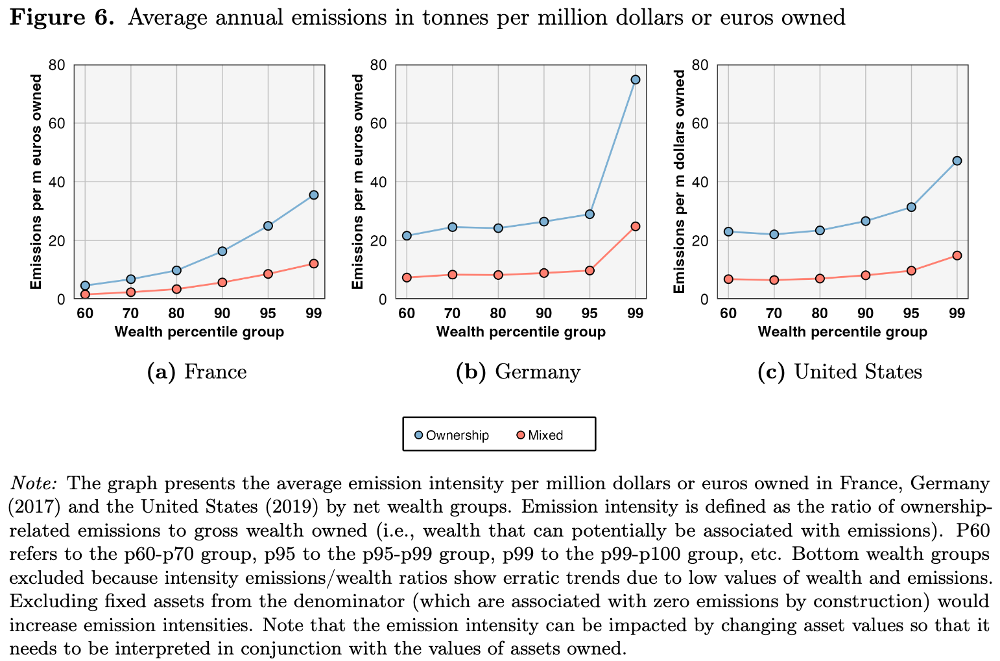
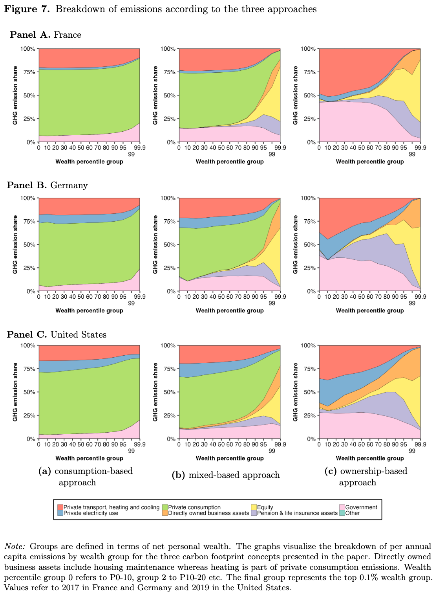
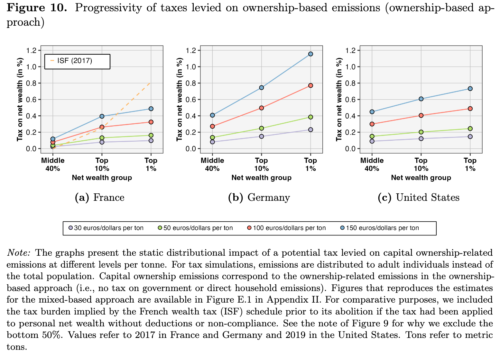
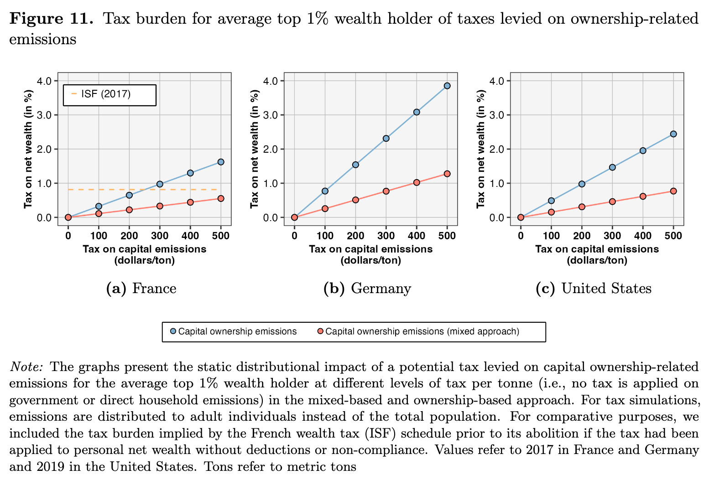
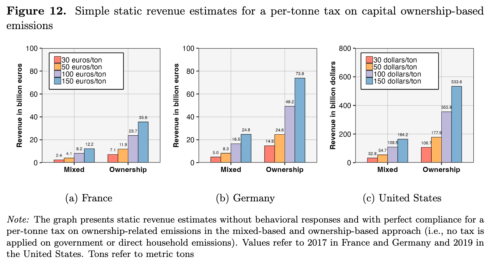

This is a working summary of the paper
Abstract (p.0)
The Abstract of the paper gives general indications about where the paper wants to go :
- What is the carbon footprint of capital ? What is its distribution ?
To answer this question, they offer a new acounting framework that captures all emissions without double counting.
Their results are :
- This accounting framework underlies that the rich parts of the distributions are much more responsible of the emissions than in other accounting systems.
- For the very rich, most of their emissions stem from asset ownership, not from direct energy consumption.
- Emissions from capital ownership is more concentrated than cpital itself.
The implications at the policy-level are that targeting individual assets and investments should be promising to reduce CO_2 emissions.
1 Introduction (pp.1-4)
They identify an existing gap in the literature of carbon accounting : individuals as owners of polluting assets. Indeed, they underly that most of the existing literature focus on either the country level, or on the individual as final consumers, or finally on the corporate as producers.
Most of the literature of carbon accounting focused on individuals have taken the consumer based approach. At the international level, this is interesting because it allows a study of why some countries have emissions that in fact are due to the living standard level of other countries. At the national level however, this is problematic because there is a clear problem in putting all the responsibility of the carbon emissions to the final consumer.
They say that this article has 3 main goals :
- Define 3 measures of individual carbon footprint including ownership-related emissions.
- Apply those measure to France, Germany, and the USA.
- Show stylized facts and discuss implications at the environmental and tax policies level.
- The 3 approaches of measure of individual carbon footprint are :
- owenrship-based approach : emissions from production are attributed to firm owners.
- consumption-based approach : attribution to the final consumers.
- mixed-based approach : emissions from production are attributed to consumers, except the ones du to capital formation (investment).
They say that in all approaches, direct emissions of Households are attributed to the Households themselves.
They combining official environmental accounts (i.e. air emissions) and national accounts (like production, income, and wealth) to compute the carbon distribution at the individual level for the 3 approaches.
With the distribution of asset ownership, they estimate the individual emissions of asset ownership, with “existing estimates from the literature on the distribution of direct and consumption-based emissions”(p.2). Essentially, they combine :
- estimates of emissions
- asset ownership distribution
To estimate individual emissions of asset ownership.
Using this approach, they find important emissions inequalities. When using the ownership-based approach, the rich are much more responsible of emissions (increase by 2 to 2.8 timefolds).
Also, they find that the majority of emissions of the wealthiest come from their asset, and not from their consumption.
They also note a higher concentration of emissions from wealth ownership. In other words, the assets of the very rich have a higher emission intensity in average.
They conclude that a tax on wealth emissions would be more progressive than a tax on emissions of consumption.
Contributions to the literature :
They claim that their accounting system is consistent with satellite environmental accounts and distributional national accounts.
Also, they depart from the consumption-based literature and offer a framework for individuals such as owners and investors.
THey claim to provide original data about emissions of types of assets, that are consistent with macroeconomics totals.
This claim seems to be huge. This would mean that not only do they have alternative to the GHG protocol data and Trucost EDX dataset, but that they are also macro consistent.
- This consistent framework allows for policy-studies at a finer level. Notably, for the study incidence of carbon taxes.
This claim seems to be huge. Together with estimates of leasticity of emissions with respect to tax, we could have a consistent model, comparable to a development of Diamond and Mirrlees (1971) but for carbon taxes.
3. Data Sources and Methodology (pp.10-26)
- The authors explain that this part has three sections :
- Conceptual framework : 3 carbon footprint approaches.
- Data sources
- Methodology :
- extended aggregate environmental and economic acounts,
- distributional environmental accounts
They make a reference to the IPCC 2022. Is is the same as paragraph 19 ?
3.1. Conceptual framework : Three Carbon Footprint Approaches (pp.10-15)
- THey develop 3 approahces :
- ownership-based
- consumption-based
- mixed-based
They refer to Appendix I, section C1 for a more detailed definition of each approach.
Ownership-based approach
In this approach, theyattribute all scope 1 emissions (i.e. all direct emissions) to the owners of the firm. Owning a firm can be done through holding corporate equity (in proportion with the share held among the total capital). Owning a firm can also be done directly, for example for self entrepreneur.
This simple rule allows to “overcome” difficulties from the linkage of a stock (wealth) with flow (emissions). They link emissions to production, to cpital, to owner, that can be households, government, corporations, or abroad agents.
They only take direct emissions to comply with the exclusivity criterium. Also, they only take into account money that gives ownership-rights, and not purely financial assets.
DIrect households emissions are simply linked to the households in this method.
When emissions are due to capital owned by the government, they still attribute them to individuals. All emissions that are related to the health and education sectors are uniformly attributed to all citizen, and emissions from all other sectors are attributed proportionally to the income.
If a firm is operating abroad, but the owner is from the country of interest, the emissions are linked to him in this ownership-based approach.
The authors then compare their approach with the GHG and PCAF protocol. THey identify two main differences :
- First, the other initiatives attribute emissions to purely financial assets, in opposition to their approach.
- Second, the other initiatives are not individual and exclusive. All emissions (direct and indirect) are attributed to one asset, and not one individual.
I am not sure about the PCAF, but the GHG protocol differenciates scope 1,2 and 3. In this sense, one could choose to select the scope 1 emissions only. I don’t see how the GHG would not be exclusive then.
- Still comparing the GHG and PCAF to their approaches, the owerniship approach has the closest results to them.
Mixed-based approach
In their mixed-based approach, the authors attribute capital formation emissions to investors (or owners) and the rest of emissions to consumers.
They use this difference between money to produce and money invested to reproduce capital of the firms, partially because this differenciation is available in the national accounts. Also, while money to produce production is “demanded” by consumers, money invested is “demanded” by the firm.
The authors mention that they use a multi-regional input-output model, in which they separate :
- gross fixed capital formation emissions
- final households emisions
- government consumption emissions
What is a “multi-refional input-output model” ?
In this approach, more is attributed to the final consumers than in the previous approach. Also, for the government emissions, they use the same strategy as in the ownership approach.
The authors make the distinction between net and gross capital formation. In the gross capital formation is included the replacement of machines, and the buying of new machines (the net capital formation). In other words, gross capital formation investment is the addition of the replacement and investment. The authors decide to attribute gross capital formation because only taking net would attribute the difference to the final consumers. Also, net and gross capital formation have different intensities, so this distinction is important for the results.
I am missing something in the paragraph 53.
54-55. THe authors recall the existence of the value-added approach and of the income-based approach. THeir point is :
- The value-added approach is too difficult to implement if we do not have an aggregate vision of data.
- The income-based approach is sensitive to manipulation from the firm. It would be beneficial for the firm to for example delay profit flow, making the workers responsible for all its emissions instead of the owners.
Consumption-based approach
To see strengths and weaknesses of this approach, check paragraphs (21-28).
The authors warn that the ownership appraoch (1) and the consumption and mixed-based approaches (2) have different total emissions. Indeed, some are owners of foreign firms, and some consume from foreign firms.
THe authors advance that those approaches are complementary to each other and do a paralel with studying social inequalities. one must not only study the differences in consumption, but also in income and wealth to understand these inequalities.
3.2. Data sources (pp.15-18)
Wealth data
For France and Germany, the authors take the Household Finance and COnsumption Survey (HFCS), which has the wealth distribution and the asset owned along this distribution. For the US, they use the Distributional National Accounts (DINA) data (Piketty et al., 2018). Those are micro-files that include tax, survey, and national accounts data.
The authors mention that there exist a lot of problems with HFCS data, for example they do not take into account the wealth of the richest part of the distribution. In this sense, they do proceed to correction of the HFCS data.
The corrections are essentially a re-weighting approach based on the distribution of the World Inequalitye Database (WID). They fix weights so that they get the same distribution as in the WID. They assume however that the HFCS has correct information about the holding of assets along the wealth distribution. They add that the DINA files do not require corrections.
Macroeconomic capital stock and balance sheet data
- To get these data, they link emissions to industries, and then to institutional sectors (households, government, corporations, and foreign firms). To do so, they take data from Eurostat for France and Germany. For the USA, they take data from the OECD. For the three countries, they use :
- Stock of fixed assets by industry and year.
- Stock of fixed assets by institutional sector.
- Stock of financial liabilities by institutional sector and year.
Emissions data
Fot data on emissions, the authors use EUrostat for France and Germany, and the OECD for the USA. They only take the total of scope 1 emissions for all industries.
They also want to associate households electricity consumption carbon footprint to the households directly, and not transfer it to the owners of energy producer firms for example. In order to do so, they use extra data :
- For Germany, they use the national environmental economic accounts,
- For France, they use the National Energy Balance,
- For the USA, they use the monthly energy review tables.
- In 64, there are only direct emissions. However, the authors are also interested by indirect emissions, “necessary to satisfy final demande” (p.17). To do so, they use a dataset from the FIGARO (Full International and Global Accounts for Research in input-Output). This dataset is based on input-output tables of industries and compute the “carbon footprint linked to final demand categories”, i.e. among households, the government, gross fixed capital formation (the dataset includes 45 countries plus a category “the rest of the world”). Since the dataset only accounts for dioxyde carbon, and not for other GHG emissions, they rescale emissions to estimate other GHG emissions also.
They refer to appendix I, B.10 for more details on this point.
I think it is important to be able to present the methodology of 64 in detail, and to know how to explain what an inpu-output table is. Check page 17.
Emission inequality data from the literature
- To take the distribution of direct households emissions and consumption-based emissions, they use the following work :
- For France, Malliet 2020,
- For Germany, Hardadi et al., 2021,
- FOr the USA, Starr et al., 2023a.
They refer to the appendix for more details on those papers.
Cross-border investment data
- For the emission intensity of cross border investment, they use the following datasets :
- EU-Finflows for financial investment,
- EU-EDGAR for emission intensity.
3.3. Methodology (pp.18-26)
- The authors say that they first produce extended aggregate accounts as a “first step” for the ownership-based and mix-based approaches. For these, one need emissions from capital. Here, I note that “macroeconomic environmental accounts” is just a fnacy name for linkage from emissions to institutional sectors.
3.3.1 Step 1 : Extended aggregate environmental and economic accounts (pp.18-23)
- The difference between the usual and extended accounts is that :
- in the usual accounts, emissions are linked to industries,
- in the extended accounts, emissions are linked to institutional sectors.
The novelty is thus the attribution to the institutional sectors. They also mention that they distringuish the type of capital for the industry.
The authors say that they first do the accounts for the ownership-based approach, then for the mix-based approach. Two different versions of the accounts are thus necessary.
73-82. Basically, the do as in Figure 2, page 21 :

- They dedicate a specific paragraph to finding proxy for emissions linked to foreign investment, that they get through the EU-Finflow and EU-EDGAR datasets.
The results of this first step are to be seen in the Figure 3, page 23 :

We note here that those are national emissions, i.e. aggregated between households, the government, and corporate groups.
3.3.2 Step 2 : Distributional environmental accounts (pp.23-26)
84-85. For capital emissions, they use wealth distribution and the distribution of assets along this wealth distribution (4 different types) to link emissions to individuals. They mention again that some problems exist with the HFCS data. The 4 different types of assets are :
- housing,
- directly owned business assts,
- pension and life insurance assets,
- equity
86-87 . For consumption-based emissions, they use estimate from Malliet, Hardadi, and Starr, as mentioned in 67.
I don’t think I understand what is meant when they mention the constant elasticity parameter in paragraph 87.
- They use a generalized Pareto interpolation method to deal with the lack of data points from the papers. For the HFCS, they assume constant elasticity at the top of the distribution (p.25) to deal with the problems they already mentioned about this data.
Distributing government emissions
90-92. They present a benchmark (see 45, page 12), a flat version (uniform redistribution), and a version where government emissions are excluded.
The results they obtain are to be seen in Figure 4, page 25 :

- We should be able to comment this figure.
- We should not forget that this is only the top 10% emissions shares.
4. The Carbon Footprint of Capital (pp.26-31)
4.1. Capital emissions by industry and institutional sector (pp.26-28)
The authors present Table 1 (p.28), where they present carbon intensity per industry for France, Germany and the USA in two different approaches : mix-based and ownership-based. The mixed approach attributes emissions to industry only through capital formation / investment emissions, while the ownership approach attributes all emissions of industrial sectors to industries.

94-97. The authors comment on several observations from the Table 1 (p.28) :
- Most emission come from :
- manufacturing for France and Germany,
- agriculture and mining for the USA.
- The most intensive sectors are :
- First place : agriculture and mining for France, Germany, and the USA.
- Second place for Germany and the USA : waste and water
- Second place for France : manufacturing.
- Similar intensities for manufacturing seem to support the hypothesis of a competitive global market.
- The huge variations in intensities of energy sector translate differences in strategies.
- Difference in real estate sector are due to difference in accounting methods between the USA and Europe. In this sense, this specific sector is not comparable du those differences.
- Understand why real estate and housing is not comparable between Europe and the USA.
- Section 4.1. and Table 1 do not seem to be too much relevant for the presentation
- It could be interesting to have some orders of magnitude in terms of tC02e for the public to understand.
4.2. capital emissions by asset class (pp.29-30)
- The authors then present capital emissions by asset class. They mention that this approach is more sensitive to changes in the value of assets. Here, they identify 5 different classes, namely :
- housing assets,
- business assets,
- equities,
- pension assets,
- fixed income assets (that are associated with emission levels of 0). Those are : government bonds, corporate bonds, asset-backed securities like mortgage-backed bonds.
99-103. The authors then proceed to comment their results, summarized in Table 2 (page 30) :
- Housing assets have the biggest market valuation, but have very marginal emissions.
- Equities are the most polluting assets by far.
- Pensions are second in terms of carbon emissions, but are much more carbon intensive in Germany.
- Business assets are third in terms of total carbon emissions, but their carbon intensity varies very much.

4.3. the role of foreign capital in national emissions (pp.30-31)
“Foreign equiy ownership therefore constitutes a substantial fraction of the equities held and the overall wealth of individuals in these nations” (p.30).
Generally, equity held abroad by France and Germany citizens are more carbon intensive than the domestic equity. The inverse is true for the US citizens, i.e. domestic equities of the US held by US citizens are more carbon intensive than foreign equities held by US citizens.
The authors try to explain this difference in carbon intensity of equity by giving two explanations. The first involve the intermediation level of equity, and the second is simply that “ultimate ownership of physical assets are comparatively less carbon-intensive in the US than those owned by French and Germans” (p.31).
It seems helpful to state the difference between equity and corporate bonds. Equity refers to the stock of a firm, like a part of it, while the corporate bonds are debt of the firm, i.e. like loans of the firm.
5. The Distribution of Carbon Footprints (pp.31-37)
5.1. Emissions rise with income and wealth (pp.31-34)
The first finding of the authors is that “emissions consistently exhibit a pronounced income or wealth gradient” (p.31), i.e. when welath or income increase, so does the emissions.
The second important finding of the authors is that depending on the approach, the authors find carbon inequalities levels that are comparable to wealth or income inequality levels. In terms of carbon inequality, the US are globally more inequal than Germany, which is in turn more inequal than France when comparing top 10% to bottom 50% (Check the numbers of the paragraph 107). In this sense, figure 5 (p.33) is interesting to check :
- consumption-based approach gives small levels of carbon inequality
- mix-based approach gives similar levels of carbon inequality as compared to income inequality
- ownership-based approach gives levels between income and wealth inequalities.

109.The authors notice that the poorest people in the US (bottom 50%) have emissions comparable to the middle 40% in France and Germany (except when comparing it in the ownership-based approach). The general idea is that the bottom 50% of the US emits like the 10% of France in average (16.2 tons for the top 10% in France, 14.2 for the bottom 50% in the us).
The authors then focus on the top 10% in France and Germany. They note that these groups emissions are quite simlar, except for the ownership-based approach, in which the top 10% of Germany emits more byt 10 tons in average. In the meanwhile, the top 10% of France own 5% more of the national wealth than the top 10% of Germany.
Comparing the top 10% of the US to France and Germany, they get that the US group emits 3 times more than the french group, and twice the amount of the german group.
For the top 1% :
- in France, they emit 169 equivalent of tons of CO2
- in Germany, they emit 283,
- in the US, they emit 547.
“Ownerhip-based emissions of the richest 1% of the population lie 22 to 27 times above the national average in the three countries.” (p.32).
- Figure 5 seems central to the paper.
- How do they take into account negative net wealth ?
5.2. Emissions intensity rises with wealth
- THe authors advance that “the average emissions intensity tends to increase alongside wealth at the very top of the distribution” (p.35). Emissions per million euro or dollar grows very fast for the top 10% and 5%.

In Germany, the rise seems huge (bigger than in the US). This could be due to the portfolio specificities of the very rich German (see paragraphs number 105 (p.31) and 110 (p.32)).
The authors advance that this seems to suggest that “beyond a certain wealth treshhold, (…) the composition of assets significantly augments the emissions attributed to the wealthy” (p.35).
This high carbon intensity at the very top of the distribution explains why emissions (ownership-based) are even more concentrated than wealth itself.
5.3. The weight of capital emissions among top groups
- “When incorporating capital emissions (…), the carbon footprint of the top 1% escalates.” (p.36). Basically, the idea is : Emissions of the top 1% :
| Countries | Share in the consumption-based approach | Share in the ownership-based approach | Increase in tons of CO2 |
|---|---|---|---|
| France | 2.5% | 21.5% | 6 |
| Germany | 2% | 22.3% | 11 |
| US | 6.2% | 26.9% | 16 |
- The authors then put the emphasis on the fact that the top of the distribution has their emissions coming from their asset mainly. The carbon emission structure changes a lot. Generally, when wealth increases, direct emissions decrease and capital emissions increase. “It is quite clear that capital ownership is a paramount determinant of wealthy individuals emissions” (p.36).

It is important to keep in mind figure 5 (p.33) when commenting figure 7 (p.37).
6. Discussion (pp.38-51)
6.1. Sensitivity of the results to assumptions (pp.38-39)
- The authors present figure 8, in which the have ranges of emissions for the top 10% under different scenarios (between 200 and 216) in which they change :
- government emissions
- non-ownership-based emissions
- housing-related emissions
Figure 8 (p.38) shows that the benchmark models results are always within the bounds / range given by alternative scenarios.
Even assuming extreme secnarios, this does not affect “the general patterns we identify in the paper” (p.39), because the benchmark are always within the bounds.
6.2. Schope and limitations of the data and footprinting approaches (pp.39-44)
They now talk about the limitations of their approach
Limitations linked to data sources : They advance that the first weakness is the fact that the data relies on self-reporting, which could lead to important under-reporting for the top of the distribution. They still find similar result in the three countries, which seems to be a good sign.
The second main limitation of the data they use is the limited number of asset classes. More generally, they do not have enough data on the portfolio composition of the agents. For example, it may be that the very rich mainly own the less emitting firms. We cannot know just based on the data of the paper. However, errors are limited since only the very rich own equity.
Also, such data is simply unavailable in a some countries, making the study of the carbon footprint of assets impossible there.
They also mention that air emissions accounts are not of high quality, especially in the US.
Focusing on the weaknesses of the consumption-based approach, they mention :
- sampling bias of budget surveys
- the assumptoion of these studies is that “emissions per dollar spent for a particular consumption categoy (…) are equal across different income or wealth groups”
- aggregation from multiple countries could be problematic.
For the mixed-based approach, the limits are coming from both wealth data and from those mentioned in paragraph number 126.
Carbon footprints and individual responsibility
A difficulty is that “no broadly defined individual footprinting appraoch can fully capture the actual responsibility individuals bear for emissions” (p.41). Associating emissions with responsibility usually assumes :
- agency, intentionaly, and control,
- information,
- alternatives
In reality, those 3 conditions are rarely fulfilled.
For example, knowledge about emissions associated with certain products is rare. Even when possessed, no alternatives may exist. They give here the example of the Yellow Vests in France between 2018 and 2019.
One approach that could meet the 3 conditions of 128 is the ownership-based approach, but even there, some limits exist.
For example, who has decision in the firm : managers, or owners ? Even there, the data does not allow for a well defined identification strategy.
Also, what if some expenditure are done to reduce carbon footprint in the the future ? For example : eletric vehicules, or machines to diminish the carbon emission of the production process. This add a new form of temporal complexity.
The authors estimate that these considerations are unlikely to impact their results.
The authors mention that one could model further :
- \(\alpha\) the rate of control over indirect emissions.
- \(\beta\) the rate of control over direct emissions.
The chosen approach could vary in function of \(\alpha\) and \(\beta\).
More studies to find out more about \(\alpha\) and \(\beta\) would be necessary, to allow for a better definition of the chosen approach.
The authors also mention that the role of the government is underestimated here, and that one could study the role of policy making in the process of government emission distribution (they mention the example of the lack of public transportation).
6.3. How our estimates compare to earlier work.
- They say that Greepeace 2020 is the closest work to their ownership-based approach. However :
- It is not macro-consistent.
- They have less good data of wealth / income distribution.
- Compared to the mixed-based approach, Chancel 2022 is closer. However :
- It has less prices data on emissions.
- It has no data on joint income / wealth distribution.
- It has less flexibility on government role.
- It has less data on wealth distribution.
- Compared to Malliet, Starr, Hardadi, in those studies :
- Units are not the same,
- The role of government is not the same,
- income / wealth may be in different units : net wealth, pre/post-tax…
- FOcusing on the country-level, they are able to reproduce important findings, such as :
- wealthy nations import more embedded CO2 emissions than they export (France, Germany)
- emissions due to capital owned are more important than territorial emissions (France, Germany)
- the inverse is true for the US, “which appears to be consistent with the negative net foreign asset position of the country” (p.45).
6.4. Stylized facts on inequality and emissions (p. 46)
First of all, wealth is positively correlated with emissions. They here mention the “Environmental Kuznets Curve”, and say that their study goes against it.
In the consumption-based approach, carbon intensity may be higher for the poorest, because less intensive products are costlier, but carbon emissions are still higher.
THe opposite is tru for wealth emissions, which are more concentrated than wealth itself. Indeed, carbon intensity is very high for the top of the distribution…
6.5. Distributional properties and revenue estimates for a carbon wealth tax (pp.46-51)
147-148. Taxation on consumption and goods are propblematic, because of the focus on consumption…
- They mention figure 9 (p.49), that presents the progressivity of a 150 euro/dollar per tonne on different types of emissions. Basically, tax on consumption and private transport are regressive, while tax on capital is progressive.
They exclude the bottom 50%…
You cannot write “the graph demonstrates…” (p.47) and exclude the bottom 50% because of the explanation given in page 49.
- They propose the lecture of the figure 10 (page 50), in which they simulate the impact of tax on tonne of COE2. They advance it is not much.

- They propose figure 11 (page 50), in which they compare tax on net wealth and tax on cpaital emissions. They advance it is not much. They also mention Figure 12 (page 51), that estimates a static (without taking into account behavioral responses) consequence of a carbon taxation to estimate revenu for the government.


The authors then underly the fact that “the results are intended to show that these taxes could be considered in the future as part of a more diverse envionmental policy mix” (p.48). Their goal with the precedent figures is not to argue that those are taxation policy that should be implemented, but more to show that alternatives are possible in the implementation of policies to go against CO2 emissions : “Departing from a purely Pigouvian perspective, carbon taxes could also be rationalized as a policy tool to achieve an externally defined behavioral change with the most limited harm to social welfare” (p.48).
They then answer concerns about possible double-taxation by putting the emphasis on the need for a reflexion on taxation strategy. In this sense, double taxation could be wanted to create a higher incentive for carbon emissions reduction (they mention the case of foreign firms producing for foreign markets, but owned by resident investors). They recall however that this is not the goal of their paper.
7. Conclusion (p.52)
- The authors summarize their main findings :
- “Accounting for ownership-realted emissions more than double the cabron footprint of the top 10%” (p.52)
- “Emissions from capital ownership alone are more concentrated than capital itself” (p.52)
- The policy implications are interesting to explore.
- The authors underly the fact that alternative approaches to the consumption-based approach are necessary and insightful. They however underly the need for more granular data, and for a theoretical framework of optimal capital taxation to be extended.